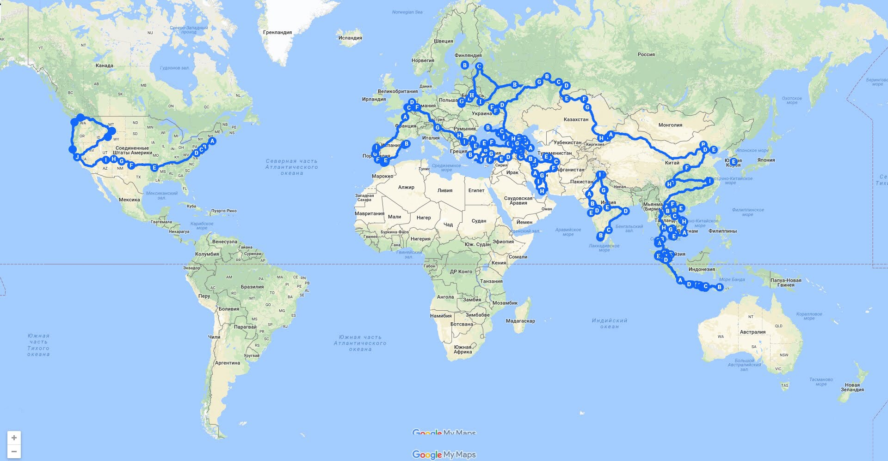
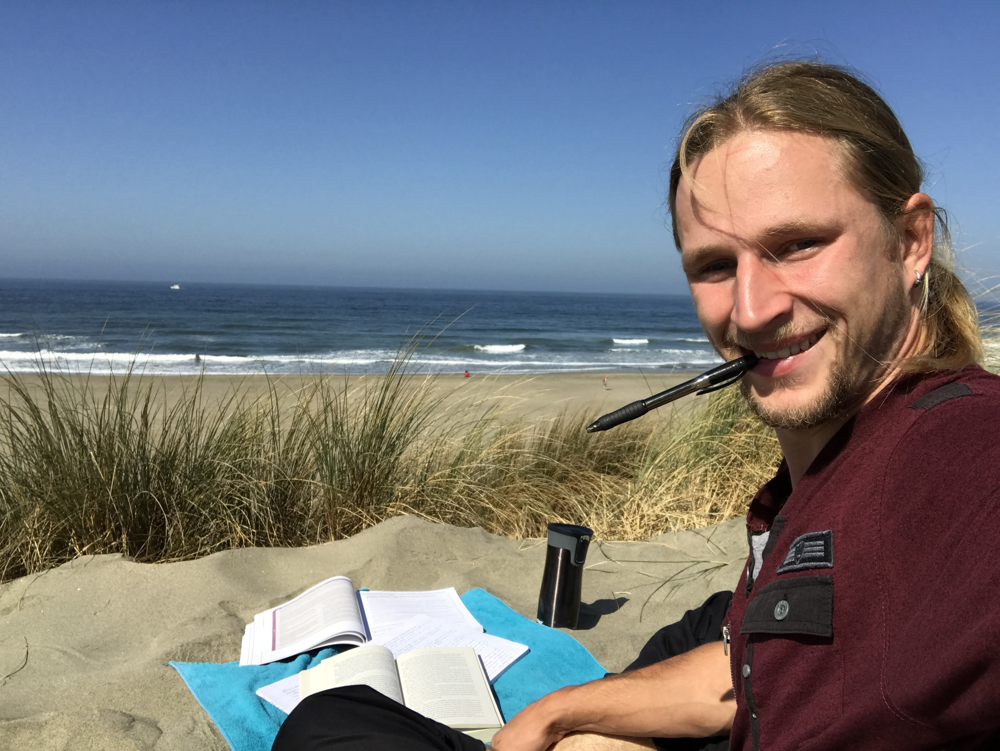

Love for exploration

In 2015, my desire for exploration set me on a 2.5-year backpacking journey around the world.
Armed with only the cheapest backpack, $300, and an unbounded enthusiasm for new discoveries, I covered over 50000 miles by hitchhiking and ventured to some of the most remote and unseen by tourists places on the planet.
The more secluded and authentic the destination, the more I loved it!

During this journey, I also opened to myself the wonderful world of volunteering.
From teaching kids in disadvantaged regions and distributing meals to refugees, to clearing polluted natural areas and helping at animal rehabilitation centers -
the variety of experiences volunteering can provide turned out to be incredible.
Love for horses

I started riding horses when I was a kid. During my travels, I volunteered at various horse facilities and expanded my knowledge in equine care, rehabilitation, and training.
I worked with a diverse set of animals - from preparing younglings to be a reliable companion, to re-building trust with previously abused resqued animals, to training horses for movie roles.
However, one of the most rewarding experiences was providing lessons and equine therapy to children with special needs.
It is amazing how these wonderful animals can positively impact our lives by simply being around.
My personal favorite activities are horseback archery and long-distance trail riding.
Love for science and technology

I loved playing with construction kits since I was a kid. In my teenage years, I had a lot of fun hacking video games and tinkering with hardware.
Unfortunately for me, various life circumstances led to my poor performance at school.
After graduation and mandatory military service, I became a semi-truck driver and spent some years driving across the wast lands of Russia.
At that time, no one, including myself, believed I could continue my education and pursue an engineering career.
Everything changed when my travels brought me to the U.S., where I sought asylum. I found out that it is very possible for someone like me to go to a community college and eventualy earn a Bachelor's degree.
My English was so poor that I struggled to order a sandwich at Subway, and my math skills were at a fifth-grade level.
I realized that it would take too much time to bring my math to the college level by taking classes, so I decided to study on my own.
My searches brought me to Khan Academy - a free educational online resource — where I spent countless hours studying between pizza deliveries and driving for Uber.
My hard work paid off! I passed placement exams and was accepted to City College of San Francisco where in a matter of 3.5 years I completed my Associate's degree in Computer Science. I decided that this time I won't screw it up, so I studied really hard and kept my GPA spotless.
When time to transfer to a 4-year university finally came, to my disbelief, I got accepted to all but one schools to which I applied. I picked UC Berkeley for having one of the strongest Computer Science programs.
Things at UC Berkeley went well. Classes were hard but rewarding. I also got a great scholarship that allowed me to reduce my work hours and focus on studies. In May 2024 I graduated with a still-strong GPA of 3.8.
This is a brief story of how hard work (and some luck, of course) paved the road to a dream. Now I'm looking forward to use all my skill to bring meaningful impact on the world!